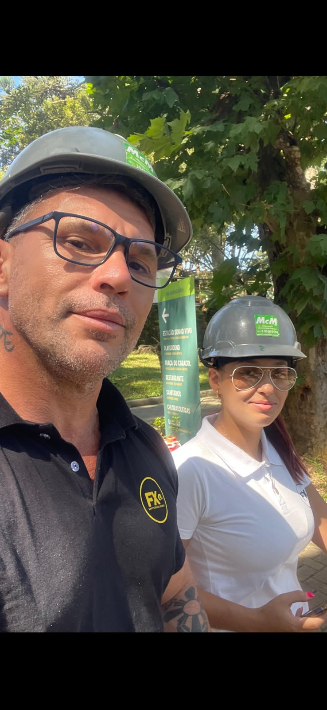

Soluções ambientais que transformam negócios.
Consultoria, gestão ambiental e sustentabilidade para empresas e instituições que precisam estar em dia com a legislação e fazer da gestão ambiental parte da rotina.
Três frentes para a gestão ambiental da sua organização.
Do licenciamento à capacitação de equipes: atuamos no planejamento, na implantação e no acompanhamento de cada projeto.
Soluções para empresas
Licenciamento, PGRS, PGRSS, efluentes, auditorias, treinamentos e acompanhamento ambiental.
Ver serviçosProjetos de sustentabilidade
Hospital Sustentável, educação ambiental, reciclagem, economia circular e projetos institucionais.
Ver projetosAcademia FX
Cursos, mentorias, workshops, consultorias individuais e materiais técnicos para profissionais da área ambiental.
Conhecer a AcademiaConhecimento técnico que vira solução para a realidade de cada empreendimento.
A FX Sustentabilidade e Gestão é especializada em consultoria, assessoria e gestão ambiental, oferecendo soluções técnicas para empresas, instituições e organizações que buscam adequação à legislação ambiental, melhoria de processos e práticas sustentáveis.
Nosso propósito: tornar a gestão ambiental mais eficiente, acessível e integrada à rotina das organizações.

O que sua empresa precisa para estar em dia com o meio ambiente.
Licenciamento ambiental
Obtenção, renovação e acompanhamento de licenças (LP, LI e LO), condicionantes e relatórios técnicos.
Saiba maisGerenciamento de resíduos (PGRS)
Planos, diagnóstico, segregação, destinação final, coleta seletiva e rastreabilidade dos resíduos.
Saiba maisResíduos de serviços de saúde (PGRSS)
Gestão especializada para hospitais, clínicas, laboratórios e demais geradores de resíduos de saúde.
Saiba maisEfluentes e controle ambiental
Diagnóstico, monitoramento e adequação de sistemas de tratamento, inclusive para lavanderias.
Saiba maisAuditorias e monitoramento
Identificação de não conformidades, checklists, planos de ação e indicadores de desempenho ambiental.
Saiba maisEducação ambiental e capacitação
Treinamentos, palestras, SIPATs, gincanas e projetos para empresas, saúde e escolas.
Saiba maisGestão de resíduos que funciona dentro da instituição, todos os dias.
Projetos personalizados para instituições de saúde que querem melhorar o gerenciamento de resíduos e fortalecer a cultura de sustentabilidade.
- Diagnóstico ambiental da instituição
- Implantação e revisão do PGRSS
- Comissões de gerenciamento de resíduos
- Capacitação de colaboradores
- Auditorias e monitoramento da segregação
- Campanhas educativas, gincanas e indicadores
Não entregamos apenas um documento.
Trabalhamos na implantação e no acompanhamento das práticas ambientais, para que o plano saia do papel.
Experiência prática
Atuação em projetos reais de gestão ambiental e gerenciamento de resíduos.
Soluções personalizadas
Cada empreendimento recebe orientação conforme sua atividade e realidade operacional.
Acompanhamento contínuo
Da elaboração dos documentos à implantação e ao monitoramento.
Capacitação de equipes
Treinamentos que transformam conhecimento em boas práticas.
Visão técnica e estratégica
Integração entre regularização ambiental, gestão operacional e sustentabilidade.
Presencial e on-line
Atendimento a empresas e profissionais de diferentes regiões.
Vamos colocar a gestão ambiental da sua empresa em dia?
Conte o que você precisa e receba um retorno pelo WhatsApp.